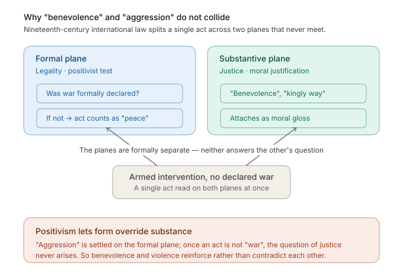
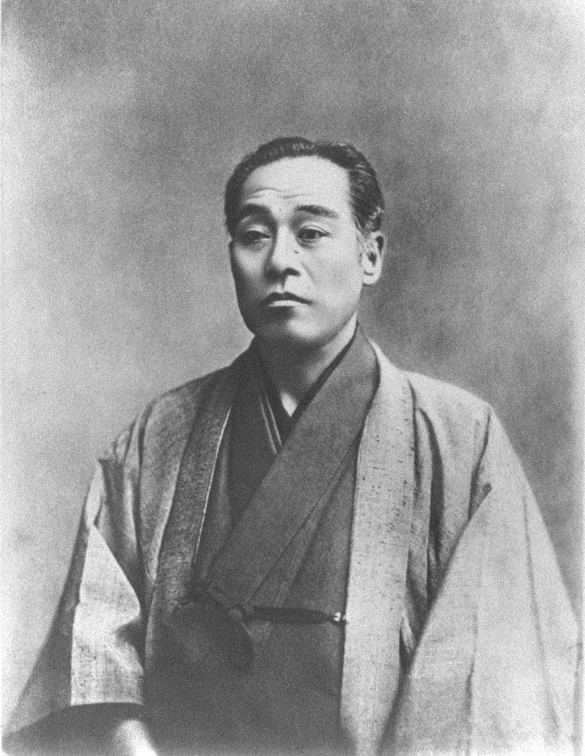

Research Question
Why could moral terms like “the kingly way” and “benevolence” coexist with aggression in modern Japanese Asianism?
If Asians first learned the idea of “Asia” from Western geography, why did Japanese thinkers imagine Asia mainly in relation to China and Korea? If modern Japanese thought was dominated by ideas of power politics and survival, why were notions such as “benevolence” and “the kingly way” included in Asianist discourse, and even used as slogans for expansion?
To address these questions, this paper analyzes Japanese Asianism from two angles: the legacy of Hua-Yi discourse and the structure of the modern international order. It asks what “benevolence” (renyi) meant within this configuration.
Undergraduate thesis, Fudan University. Chinese title: 日本近代亚洲主义中的“恶”与“仁”——基于华夷论和国际法双重视角的分析.
Core Argument
The limits of explaining Asianism through Hua-Yi discourse alone
Existing scholarship often uses the Hua-Yi distinction to explain the aggressive side of Asianism: Japan developed its own version of the Hua-Yi order (the “Japanese-style Hua-Yi order”), in which “martial power” (bui) replaced ritual as the organizing principle, Japan positioned itself as “Hua,” and Qing-ruled China was relegated to “Yi” status. This framework shares structural features with Asianism: both place Japan as leader, both organize relationships by civilizational hierarchy, and both wrap regionalism in universalist overtones.
This paper argues that such interpretations essentialize East Asian thought and reproduce a Eurocentric narrative of progress. Using Hua-Yi thought as a premodern, hierarchical understanding of order to explain only the “aggressive” side of Asianism ignores the internal complexity of Hua-Yi discourse. Categories like “Hua” and “Zhonghua” were fluid and contextual, not fixed essences. In this sense, Hua-Yi language is less an eternal doctrine of exclusion than a flexible conceptual tool for marking sovereignty and inclusion. It only takes effect within concrete political speech and practice.
Hua-Yi discourse alone cannot explain the coexistence of benevolence and aggression. To account for that coexistence, the paper turns to the structure of the international legal order.
International law: how formal legality accommodates violence
The paper’s central theoretical framework comes from Carl Schmitt’s analysis of nineteenth-century international law. The argument proceeds in three steps.
Step one: the positivist turn and the grey zone between war and peace. The nineteenth century saw international law undergo a positivist transformation. “War” was narrowed to a strict formal definition; armed conflicts that did not meet that definition could be tolerated as “peace.” This opened a large grey zone between formal war and factual peace, in which military operations could proceed without triggering the legal category of “war” and its attendant obligations. The “standard of civilization” divided the world into civilized, half-civilized, and uncivilized states. “Civilized” states were said to have not only the right but the moral duty to “civilize” so-called barbaric lands. “Half-civilized” states received only partial recognition.
Within this framework, “aggression” and “benevolence” belong to two separate registers. Aggression is defined in strictly formal terms: whether an act counts as war under the legal definition. Benevolence belongs to the sphere of substantive justification: the moral language attached to the act. The two can coexist without contradiction because formal legality tends to overshadow, or even replace, questions of justice. Acts that are not formally “war” can be treated as peace; appeals to “benevolence” or “civilization” then attach to these acts as moral gloss. This is the mechanism the diagram below illustrates.

Japanese intellectuals understood this structure clearly. Fukuzawa Yukichi’s (福澤諭吉) famous remark captures the instrumentalist worldview: a hundred volumes of international law count for less than a few cannons, and stacks of friendship treaties count for less than a box of ammunition. This was not merely cynicism. Japanese intellectuals recognized something real about how international law actually functioned: “civilization” was the entry ticket to the international community, and military power was the ultimate guarantor.


“When Japan was immersed in the peaceful arts, she was called barbarous; when she began to commit wholesale slaughter on Manchurian battlefields, she was called civilised.”
Okakura Tenshin, The Book of Tea (1906). Public domain.
Step two: from the European jus publicum Europaeum to an abstract global “international law.” Schmitt argues that the original European law of nations (the jus publicum Europaeum) was a concrete spatial order: it presupposed a community of European Christian states with shared substantive commitments, and it organized the globe into European and non-European spaces with different legal statuses. When non-European states were formally admitted on the basis of the “standard of civilization,” this concrete order was dissolved into an abstract, supposedly universal “international law” that claimed formal equality among all sovereign states. But the substantive community that had underwritten the original order was gone. What remained was a set of formally “equal” sovereigns with no shared spatial structure and no common substantive foundation. The “civilization” standard was not a neutral threshold; it was the disguised boundary between European and non-European worlds, repackaged as a universal criterion.
Asianism as spatial order: translation and failed antithesis
The role of the Hua-Yi distinction in this framework. By reinterpreting Hua-Yi thought as a flexible cultural logic rather than a fixed hierarchy, the paper shows how it functioned as a conceptual intermediary that enabled Japanese intellectuals to translate the European law of nations into an Asian context. The hierarchical order in the historical Hua-Yi system was not necessarily an obstacle to Japan’s acceptance of international law, but a medium of translation for the international order. Hua-Yi discourse and the “civilization” standard of international law operated on similar concentric, hierarchical models. Far from being an obstacle, the legacy of Hua-Yi thought may have made it easier for Japanese elites to grasp and accept the graded, exclusionary logic of nineteenth-century international law.
Step three: Asianism as a failed antithesis. Drawing on Schmitt’s concept of the Nomos (spatial order), together with Foucault on power-knowledge, Jennifer Pitts, Antony Anghie, and Karuna Mantena, the paper argues that Asianism can be seen as an antithesis to this international legal order. In theory, its regionalism and emphasis on “benevolence,” “the kingly way,” and “moral principles” were meant to counter a discriminatory spatial order with an alternative one grounded in Asian solidarity. In practice, Asianism accepted the East-West binary and the modernization narrative defined by Europe. It simply recentered the axis: Japan became the spatial center and temporal pinnacle of Asia. Its moral vocabulary offered a potential critique of Western domination but was ultimately absorbed into imperial ideology.
This antithesis failed. It never clarified what it opposed in “the West” and “modernity,” or with what it hoped to oppose them. A stance defined primarily by opposition cannot generate genuine transcendence. Calls for a “plural” world history were tied to the idea of East Asia as a single substantive unit, which in turn erased internal plurality. The imperial spatial order that Asianism tried to construct collapsed under the same unsustainable tensions that doomed other empires: it created a shared space in order to extend its own interests, but did so on unequal terms; within that space, enduring nationalisms and new nation-states made any stable, collaborative regional order impossible.
Conclusion
The paper reaches four conclusions:
(1) Using Hua-Yi thought as a premodern, unequal understanding of order to explain only the “aggressive” side of Asianism is too simple. It ignores the internal complexity of Hua-Yi discourse, and often falls into essentialism and a linear idea of progress.
(2) For an international law that proclaims universalism at the level of doctrine but in practice draws boundaries and excludes, Hua-Yi thought may have worked as a medium of translation rather than an obstacle.
(3) The positivist, formalist character of modern international law, and its project of “securing peace,” helped twist together “aggression” and “benevolence” in Japanese Asianism.
(4) Seen from the perspective of spatial order, Asianism and its “benevolence” can be read as an antithesis to international law. But this antithesis failed: “benevolence” mainly served to cover up Japan’s imperial self-interest and did not achieve real theoretical transcendence.
Existing research on Asianism has been very effective in dismantling myths, but much less successful in building new frameworks. The paper suggests that the future of Asianism, if it has one, lies not in a new doctrine of regional hegemony, but in using “Asia” as a mediating space to pursue openness, peace, and respect for difference, and to reconnect multiple histories and horizons on that basis.
A Historical Precursor
The thesis itself argues at the level of intellectual history: how two frameworks (the Hua-Yi distinction and Western international law) structurally produced the conditions under which benevolence and aggression could coexist. It does not theorize individual awareness or identity formation as such.
But looking back, I see something in the “failed antithesis” finding that I did not fully articulate at the time. Asianism positioned itself as a conscious counter-project to Eurocentric universalism. Its thinkers knew they were opposing a framework. Yet in building their alternative, they reproduced the spatial-order logic of the very system they sought to transcend. The awareness of the problem did not prevent the reproduction of it.
This pattern (frameworks shaping actors even when those actors try to oppose them) is the question I have pursued in all subsequent work, though in different registers. The nightlight study asked whether a macro-level observational proxy could penetrate individual states, and found it could not. The Xiaohongshu study found that visibility friction operates in layers that do not correspond to a simple “political sensitivity” model. The thesis proposal asks whether citizens who “know” official premises actually rely on them inferentially, or whether coverage and integration come apart.
Each of these projects, in a different medium and at a different scale, asks a version of the same question: why does the structure hold even when its constructed nature is, in some sense, visible? The Asianism thesis was where the question first took shape, even if the thesis itself did not frame it in those terms. The concepts it worked with (the Hua-Yi distinction, the “standard of civilization,” spatial order) returned directly in the State Formation and Mourning Ming proposals, where they provide the intellectual-historical groundwork for the empirical tests.
Key References
Japanese scholars (in Chinese translation)
- Maruyama Masao (丸山眞男), Fukuzawa Yukichi and Japan’s Modernization; Studies in the History of Japanese Political Thought; Thought and Action in Modern Politics; Lectures, vol. 6
- Fukuzawa Yukichi (福澤諭吉), An Outline of a Theory of Civilization; Popular Discourse on People’s Rights and the State
- Koyasu Nobukuni (子安宣邦), Modern Japan’s Conception of Asia; What Is “Overcoming Modernity”?
- Okakura Tenshin (岡倉天心), The Book of Tea
- Hazama Naoki (狭間直樹), Early Japanese Asianism
- Saga Takashi (嶋峨隆), A Complete History of Asianism
Western scholars
- Carl Schmitt, The Nomos of the Earth in the International Law of the Jus Publicum Europaeum; The Concept of the Political
- Jennifer Pitts, Boundaries of the International: Law and Empire (2018)
- Antony Anghie, “Finding the Peripheries”
- Karuna Mantena, Alibis of Empire (2010)
- Michel Foucault, Power/Knowledge
- Shogo Suzuki, Civilization and Empire (2009)
- Prasenjit Duara, “The Discourse of Civilization and Pan-Asianism”; “Asia Redux”
- Gerrit W. Gong, The Standard of “Civilization” in International Society (1984)
Chinese scholars
- Liu Feng (刘峰), Modern Japanese Asianism (2024)
- Ge Zhaoguang (葛兆光), Dwelling in China
- Wang Hui (汪晖), Depoliticized Politics
- Sun Ge (孙歌), Searching for Asia
- Han Dongyu (韩东育), articles on Hua-Yi order and Japanese war logic
- Chen Xiuwu (陈秀武), on Wan’guo gongfa and the construction of hegemonic systems
- Wang Ping (王屏), Modern Japan’s Asianism (2004)
Korean scholars
- Kim Yong-gu (金容九), The International Politics of Worldview Conflict
- Kim Mungyeong (金文京), Classical Chinese and the East Asian World
Materials
Working paper. Please cite or circulate with permission.